Storyboard Studies
click on images for description and analyses
BananaFish Episode 5
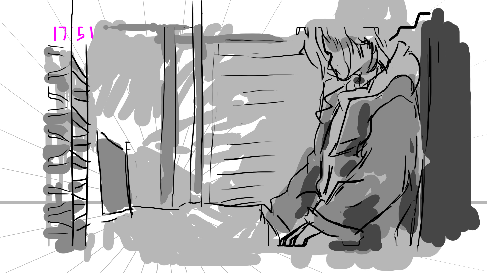
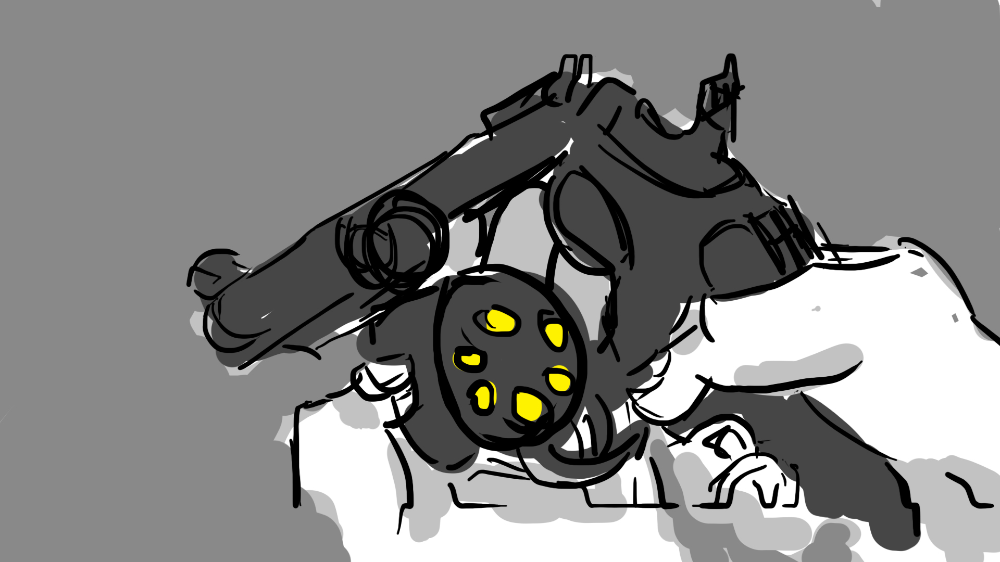
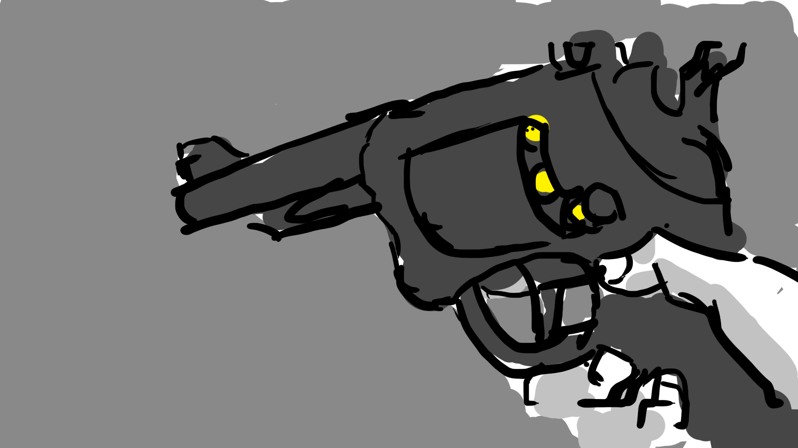

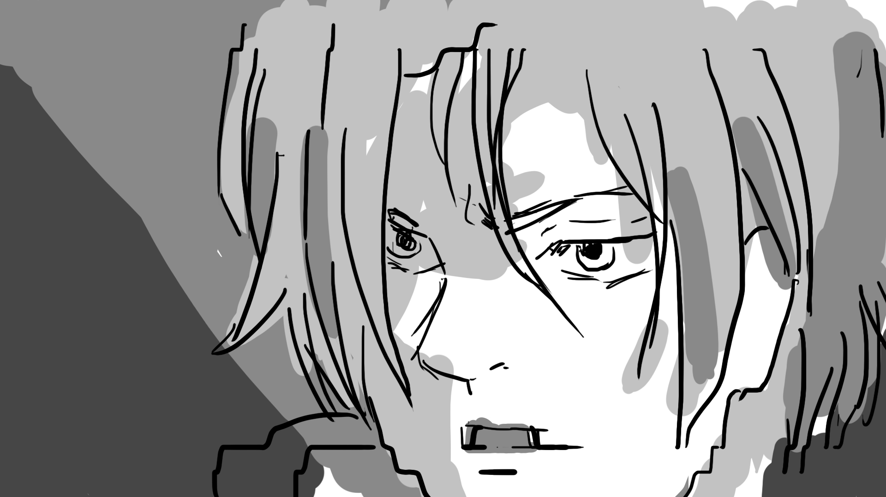


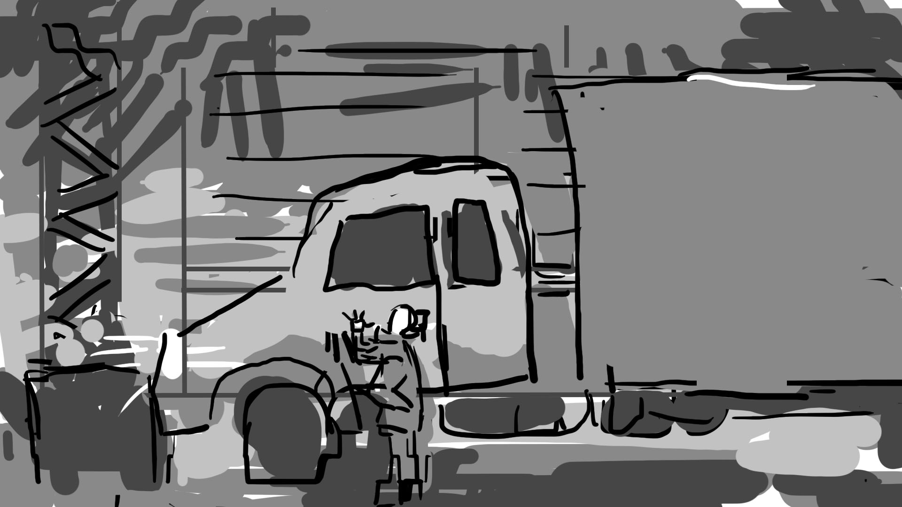


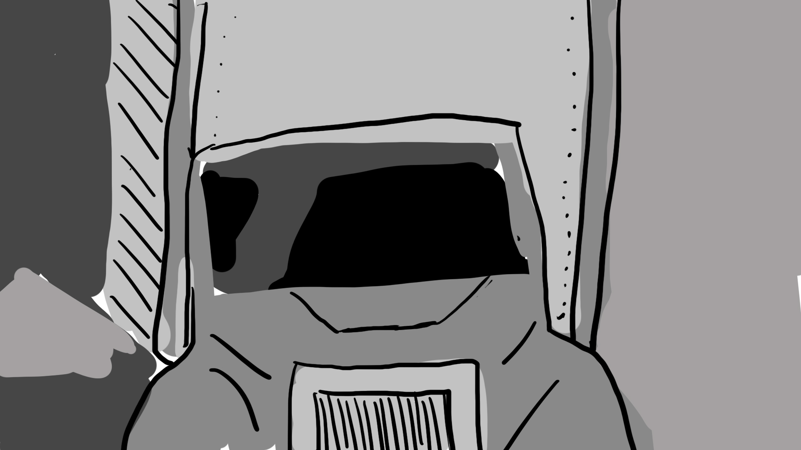
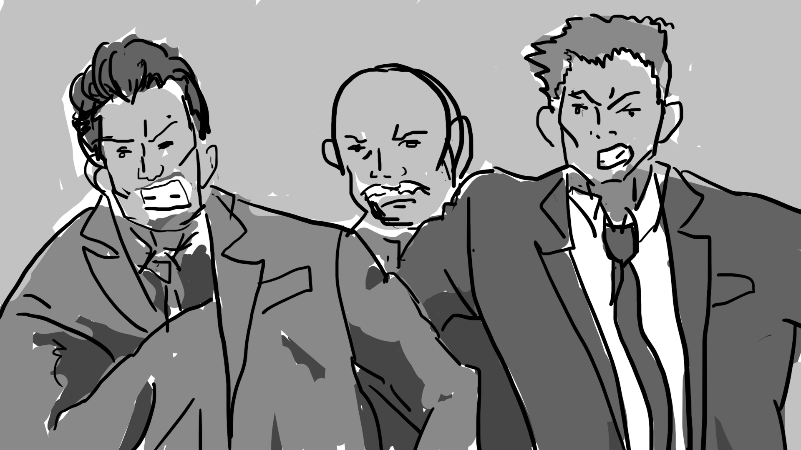
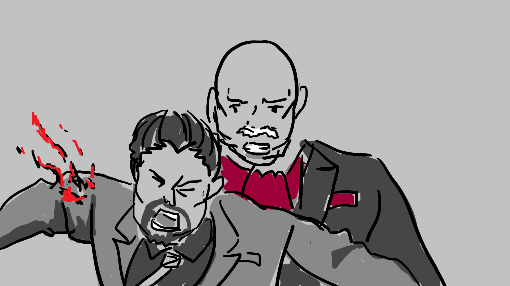
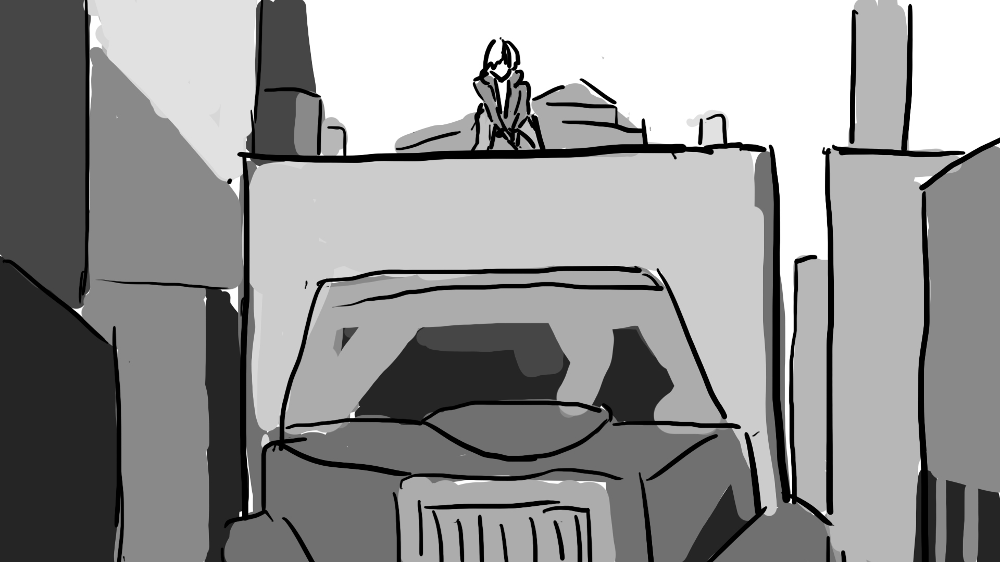
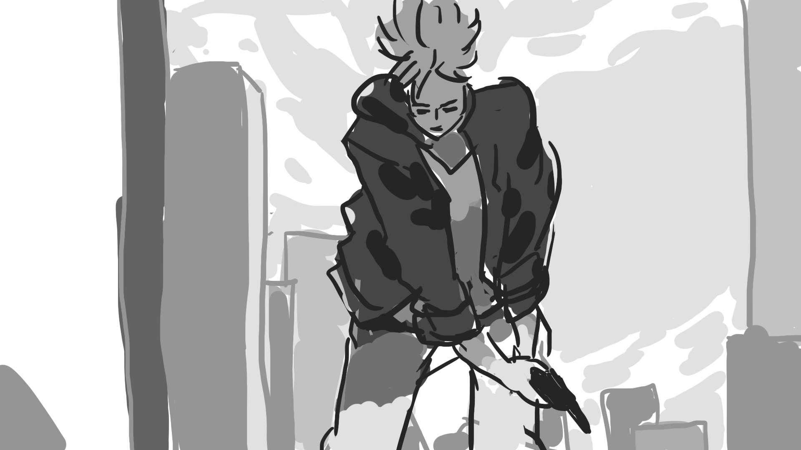
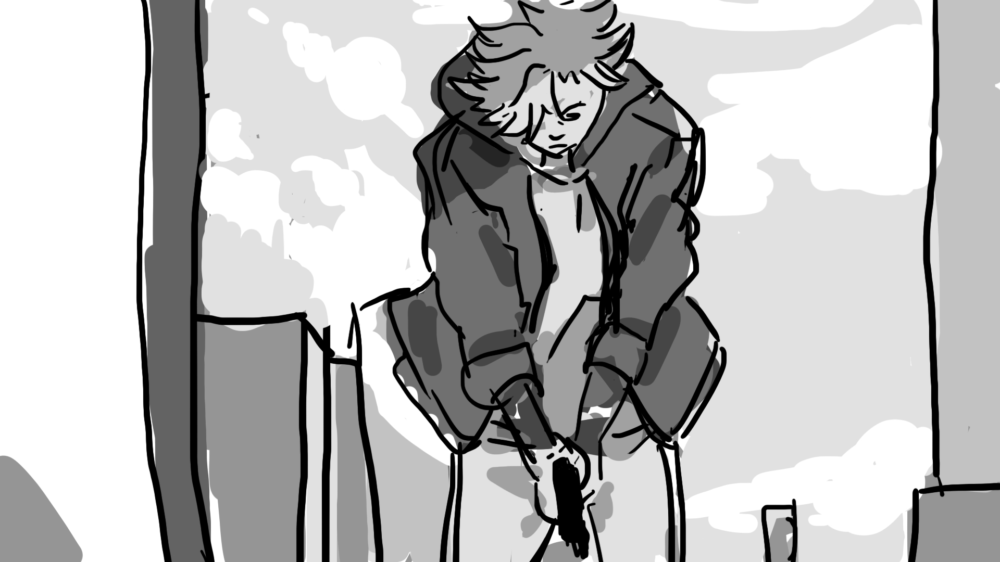
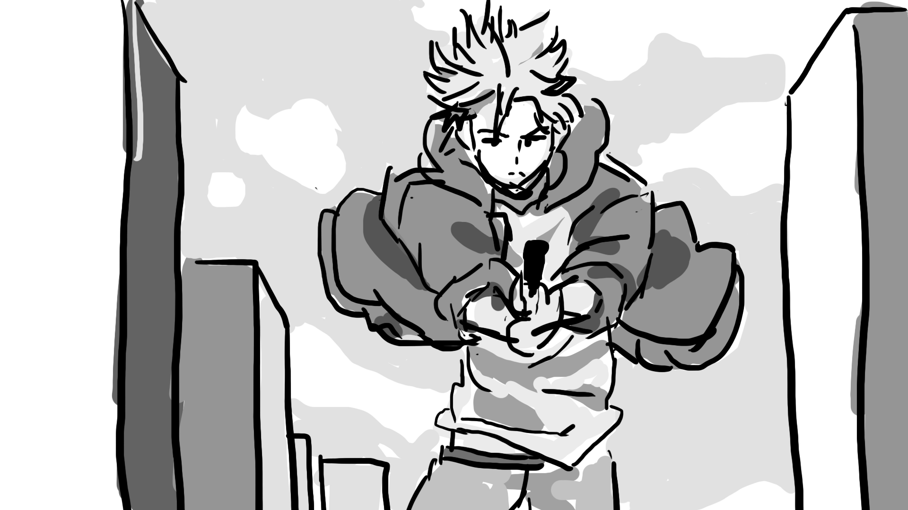
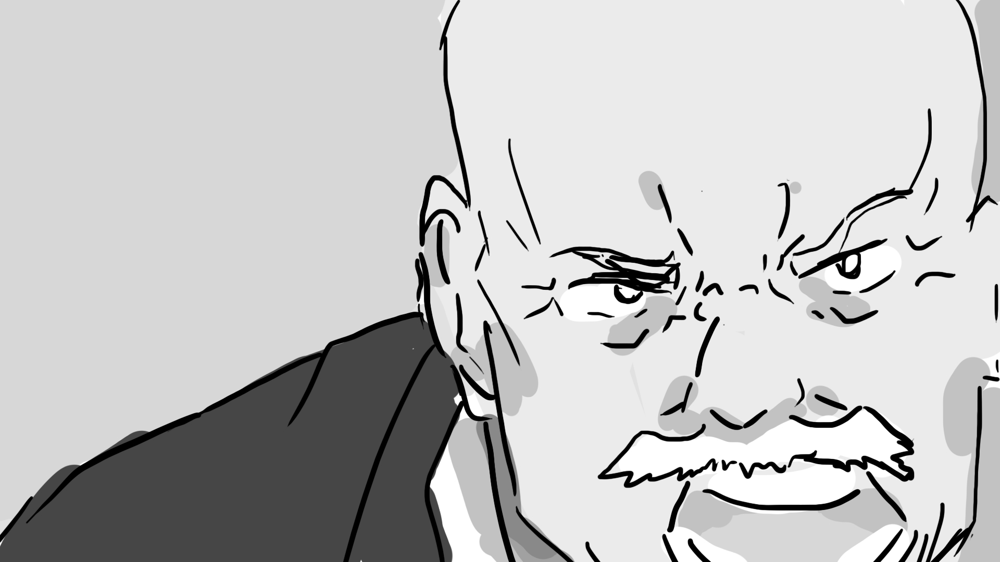
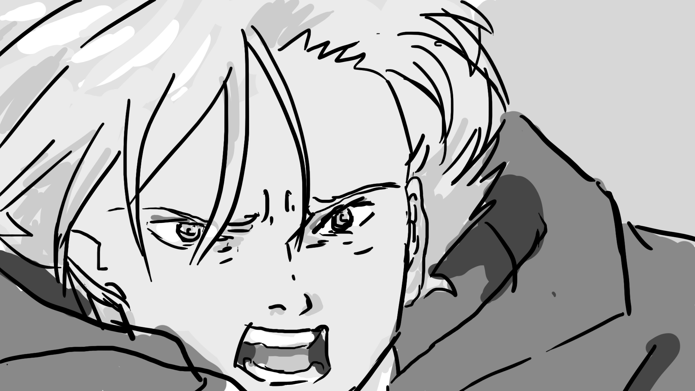
×
![Banana Fish Storyboard 1: Establishing shot in the warehouse, Ash (main character) is seen in the right third of the frame in the shadows. The light comes from an open door on the left third of the frame and is obscured by the metal structure on the left. In between Ash and the light source are two large metal bars, Ash is framed by those bars and the metal container behind him, giving him a feeling of entrapment. The leading lines from Ash’s head and body and the line where the wall and floor connect lead towards his arms and hands, which are obscured leaving the audience with curiosity.](storyboardImages/bananaFish/bananaFish01.jpg)
Lost - Webtoon
A short story webtoon based off of my hybrid novel of the same name. I created this webtoon as a practice piece to play around with art style and composition, so not all panels were fully rendered.


Lost - Webtoon Storyboard revamp